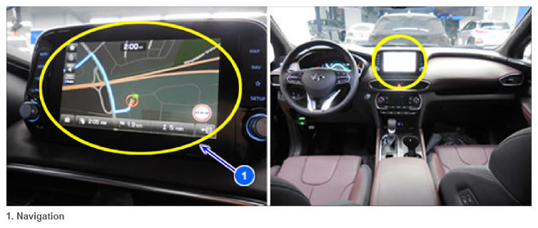

Component Function: Navigation
 Courtesy of HYUNDAI MOTOR AMERICA
|
The DIS Navigation system has improved information search and easiness of manipulation for the driver by simplifying the system operation experience and unifying the display of the user information such as multimedia, air-conditioning and car information.